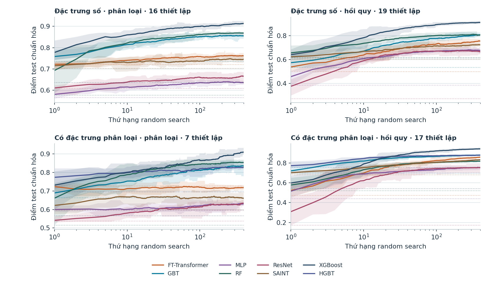
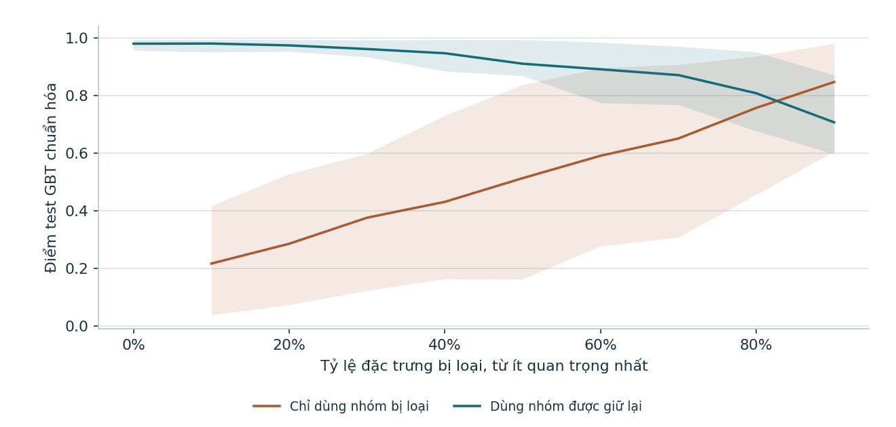
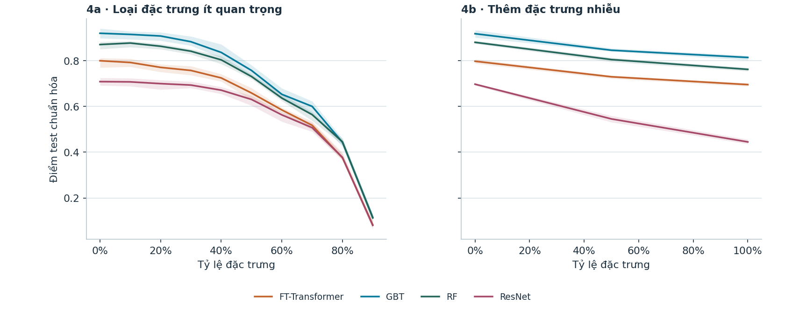
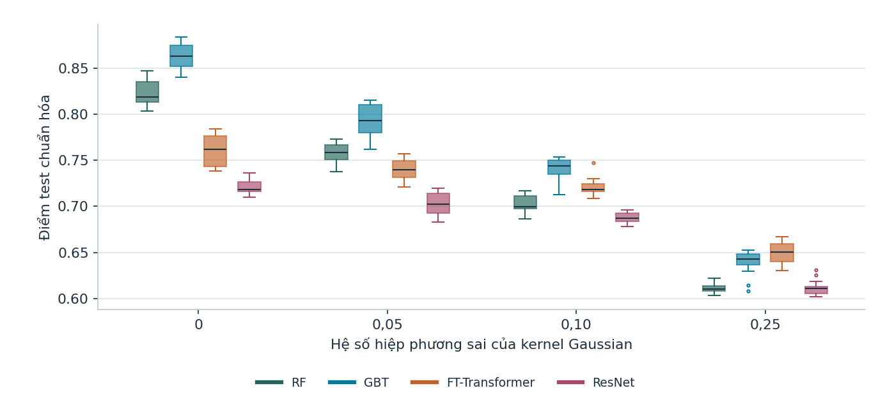
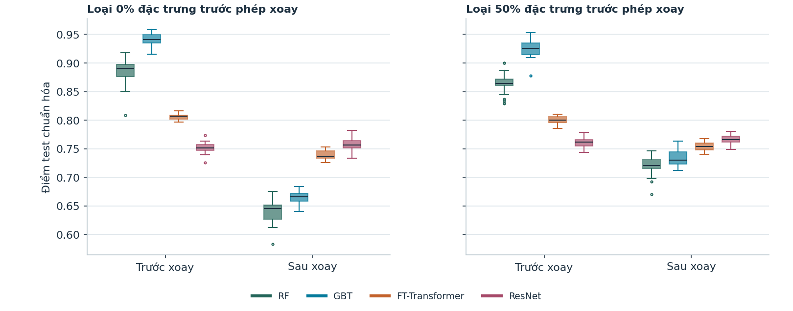
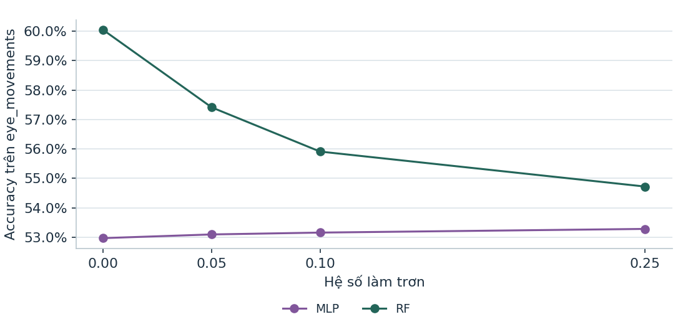
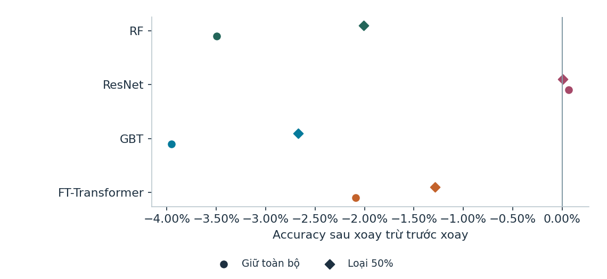

CS2229 · Tái lập thực nghiệm NeurIPS 2022
Vì sao mô hình cây
vẫn mạnh trên
dữ liệu bảng?
Paper của Léo Grinsztajn, Edouard Oyallon và Gaël Varoquaux
So sánh ở cùng ngân sách tìm kiếm
Bốn nhóm theo loại đặc trưng và bài toán phân loại hoặc hồi quy.
Cây vẫn dẫn ở nhiều nhóm dữ liệu

Figure 1 · Điểm tác giả · Đường chấm là cấu hình mặc định
Nhóm quan trọng giữ được phần lớn điểm

Figure 3 · Điểm tác giả · Xếp hạng đặc trưng bằng Random Forest
Đặc trưng nhiễu tác động khác nhau

Figure 4 · Điểm tác giả · 4b dùng dải phân vị 20–80% theo script
Làm trơn thay đổi khoảng cách giữa các mô hình

Figure 2 · Điểm tác giả · Giữ nguyên nhãn validation và test
Hướng của các trục dữ liệu có ý nghĩa

Figure 5 · Điểm tác giả · Gaussian hóa trước khi xoay
Nhóm đã chạy, đối soát và tái lập những gì?
27 hình tái lập từ kết quả công bố · 13 hình số hóa từ PDF.
Phạm vi HPO có kết quả tự chạy
24/57 thiết lập đủ đầu vào để so cùng ngân sách trên các họ mô hình.
Mẫu số HPO tham chiếu 400 cấu hình ngoài default trên mỗi cặp task và mô hình
Hai đối chứng do nhóm tự train


V2 + mở rộng · Accuracy thô · Phạm vi độc lập với benchmark đầy đủ của tác giả
Vì sao mô hình cây vẫn mạnh?
- Khai thác được thứ tự quan trọng của các đặc trưng.
- Giữ lợi thế ở các hàm mục tiêu có cấu trúc gồ ghề.
- Tận dụng được hướng ban đầu của các trục dữ liệu.
40 hình có notebook. Phạm vi tự train được báo cáo riêng.